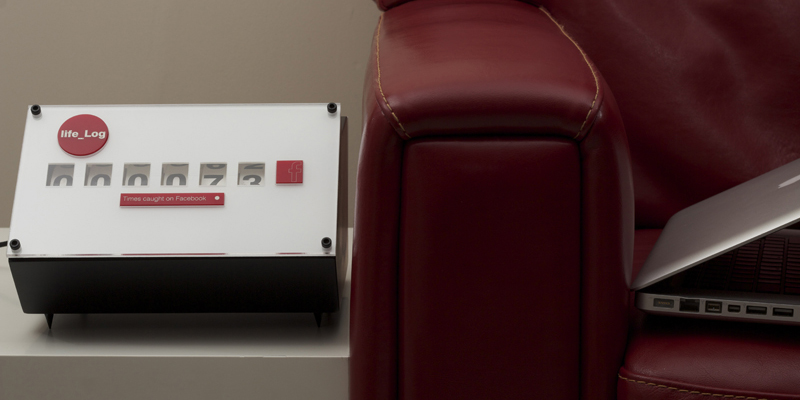

life_Log aims to make us aware of the small things we do everyday, from cups of coffee to the amount hours spent on Facebook.
To use the product the user simply writes an SMS text stating a number from ‘One’ through to ‘Nine’. Once the message is received the display rotates adding the number from the text to the total displayed on the device. In doing so the user has a clear view of their personal consumption, no matter what the item being counted is.
Inspired by an analogue mileometer from a vintage motorbike, the custom made gears are driven by the latest micro controller technology.
The bespoke interchangeable tiles and the analogue display, combined with the efficient system of SMS texting has lead to a unique, one of a kind product